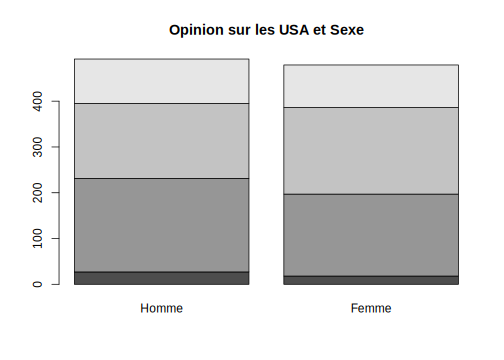
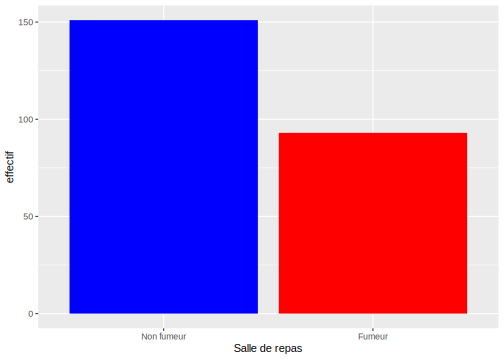
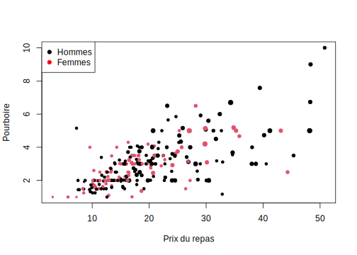
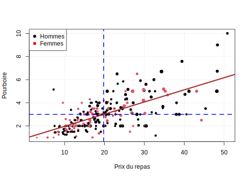

Partie 8 Analyse d’enquêtes (application)

- Mise en place : Télécharger le dossier exo7 et décompressez le sur votre ordinateur. Puis ouvrez le projet R
exo6.Rprojdans Rstudio.
8.1 Introduction
On propose ici une démarche simplifiée de l’analyse d’enquête utilisant les fonctions R-base et quelques fonctions supplémentaires issues du package questionR qui permettent de simplifier l’écriture des programmes. Les explications détaillées se trouvent dans le très beau site web analyse-R auquel ont notamment contribué Julien Barnier et Joseph Larmarange.
https://larmarange.github.io/analyse-R/
ce programme suffit pour des analyses simples de questionnaires. Mais pour des analyses plus avancées, il faudra utiliser des packages plus avancés comme survey.
8.2 Préparation des données
8.2.1 Importation du fichier au format .RDS
don<-readRDS("resources/data/pew/Pew_2007_2017.Rdata")
str(don)
#> tibble [62,060 × 10] (S3: tbl_df/tbl/data.frame)
#> $ survey : Factor w/ 2 levels "Spring2007","Spring2017": 1 1 1 1 1 1 1 1 1 1 ...
#> $ country : Factor w/ 30 levels "Argentina","Brazil",..: 5 5 5 5 5 5 5 5 5 5 ...
#> $ sex : Factor w/ 2 levels "Male","Female": 1 2 1 1 2 1 1 1 1 2 ...
#> $ age : num [1:62060] 50 79 43 74 78 36 42 61 21 41 ...
#> $ today : Factor w/ 5 levels "1.Typical","2.Particularly good",..: 1 1 1 1 1 1 1 1 1 1 ...
#> $ use_internet: Factor w/ 4 levels "1.Yes","2.No",..: 1 2 1 2 2 1 1 2 1 1 ...
#> $ opi_USA : Factor w/ 6 levels "1.Very favorable",..: 3 2 3 1 2 1 2 2 2 2 ...
#> $ opi_CHN : Factor w/ 6 levels "1.Very favorable",..: 3 2 3 3 3 2 2 3 2 2 ...
#> $ opi_RUS : Factor w/ 6 levels "1.Very favorable",..: 3 2 2 3 3 2 2 3 3 2 ...
#> $ weight : num [1:62060] 1.009 0.954 0.996 0.989 0.982 ...
#> ..- attr(*, "label")= chr "Weighting factor"
#> ..- attr(*, "format.spss")= chr "F9.6"
#> ..- attr(*, "display_width")= int 108.2.2 (simplifiée) des variables
Les données sont issues de deux vagues de la Global attitude Survey réalisée par le Pew Research Center en 2007 et 2017. Nous avons conservé uniquement des variables communes aux deux enquêtes et posées de façon identique.
- survey : date d’enquête (2007 ou 2017)
- country : lieu d’enquête (pays présents aux deux dates)
- sex : sexe de l’individu
- age : âge de l’individu
- today : état d’esprit du jour (typique, très bon, très mauvais)
- use_internet: usage d’internet
- opi_USA : opinion sur les USA
- opi_CHN : opinion sur la Chine
- opi_RUS : opinion sur la Russie
- weight : poids de l’individu pour les redressements
8.2.3 Résumé des variables (tri à plat)
summary(don)
#> survey country sex age
#> Spring2007:28061 India : 4499 Male :30125 Min. :18.00
#> Spring2017:33999 United States: 3472 Female:31935 1st Qu.:28.00
#> Lebanon : 2552 Median :40.00
#> Jordan : 2548 Mean :42.59
#> South Africa : 2295 3rd Qu.:55.00
#> Nigeria : 2202 Max. :97.00
#> (Other) :44492
#> today use_internet
#> 1.Typical :36554 1.Yes :32385
#> 2.Particularly good:20216 2.No :25892
#> 3.Particularly bad : 4775 3.Don't know: 232
#> 4.Don't know : 419 4.Refused : 69
#> 5.Refused : 96 NA's : 3482
#>
#>
#> opi_USA opi_CHN
#> 1.Very favorable :10081 1.Very favorable : 8002
#> 2.Somewhat favorable :21725 2.Somewhat favorable :21860
#> 3.Somewhat unfavorable:14502 3.Somewhat unfavorable:15097
#> 4.Very unfavorable :10629 4.Very unfavorable : 8402
#> 5.Don't know : 4718 5.Don't know : 8183
#> 6.Refused : 405 6.Refused : 516
#>
#> opi_RUS weight
#> 1.Very favorable : 5650 Min. : 0.02301
#> 2.Somewhat favorable :18105 1st Qu.: 0.65138
#> 3.Somewhat unfavorable:16806 Median : 1.00000
#> 4.Very unfavorable :10144 Mean : 1.00032
#> 5.Don't know :10719 3rd Qu.: 1.11834
#> 6.Refused : 636 Max. :18.74950
#> 8.2.4 Tailles des échantillons par pays et par date
On examine la taille des échantillons collectés dans les différents pays
table(don$country,don$survey)
#>
#> Spring2007 Spring2017
#> Argentina 800 1012
#> Brazil 1000 1007
#> Canada 982 1000
#> Chile 800 987
#> France 1004 996
#> Germany 1000 995
#> Ghana 707 1129
#> India 2040 2459
#> Indonesia 995 996
#> Israel 887 1050
#> Italy 501 899
#> Japan 762 1009
#> Jordan 1000 1548
#> Kenya 997 1117
#> Lebanon 1000 1552
#> Mexico 828 1000
#> Nigeria 1092 1110
#> Peru 800 998
#> Poland 504 1142
#> Russia 991 1002
#> Senegal 700 1083
#> South Africa 1000 1295
#> South Korea 718 1010
#> Spain 500 995
#> Sweden 996 996
#> Tanzania 702 1061
#> Turkey 971 1050
#> United Kingdom 982 1028
#> United States 1999 1473
#> Venezuela 803 10008.2.5 Sélection d’un échantillon
On décide par exemple d’analyser l’échantillon des réponses françaises en 2017 :
fra17<-don[don$country =="France" & don$survey=="Spring2017",]
source <- "Source : Pew Research Center, Global Attitude Survey, 2017, France"
summary(fra17)
#> survey country sex age
#> Spring2007: 0 France :996 Male :502 Min. :18.00
#> Spring2017:996 Argentina: 0 Female:494 1st Qu.:40.00
#> Brazil : 0 Median :54.00
#> Canada : 0 Mean :52.55
#> Chile : 0 3rd Qu.:66.00
#> Germany : 0 Max. :94.00
#> (Other) : 0
#> today use_internet opi_USA
#> 1.Typical :685 1.Yes :868 1.Very favorable : 45
#> 2.Particularly good:245 2.No :127 2.Somewhat favorable :383
#> 3.Particularly bad : 54 3.Don't know: 1 3.Somewhat unfavorable:353
#> 4.Don't know : 12 4.Refused : 0 4.Very unfavorable :190
#> 5.Refused : 0 5.Don't know : 25
#> 6.Refused : 0
#>
#> opi_CHN opi_RUS weight
#> 1.Very favorable : 47 1.Very favorable : 40 Min. :0.1830
#> 2.Somewhat favorable :360 2.Somewhat favorable :309 1st Qu.:0.3459
#> 3.Somewhat unfavorable:381 3.Somewhat unfavorable:385 Median :0.6281
#> 4.Very unfavorable :168 4.Very unfavorable :241 Mean :0.9987
#> 5.Don't know : 40 5.Don't know : 21 3rd Qu.:1.1900
#> 6.Refused : 0 6.Refused : 0 Max. :4.1079
#> 8.2.6 Recodage des modalités
Si l’on souhaite rendre un rapport en français, on va recoder les modalités des variables qui nous intéressent et en profiter pour déclarer manquantes les valeurs correspondant à des non-réponses ou des refus de répondre.
levels(fra17$sex)<-c("Homme","Femme")
levels(fra17$today)<-c("Typique","Très Bon","Très Mauvais",NA,NA)
levels(fra17$use_internet)<-c("Oui","Non",NA,NA)
levels(fra17$opi_USA)<-c("Trés Fav.","Fav.","Défav.","Très Déf.",NA,NA)
levels(fra17$opi_RUS)<-c("Trés Fav.","Fav.","Défav.","Très Déf.",NA,NA)
levels(fra17$opi_CHN)<-c("Trés Fav.","Fav.","Défav.","Très Déf.",NA,NA)8.2.7 Découpage de variables quantitatives en classes
On peut transformer la variable quantitative âge en variable qualitative (factor) à l’aide de la fonction cut(). La question va évidemment être de décider :
- combien on fait de classes ?
- selon quels seuils ?
- avec quels noms ?
On peut décider de créer cinq classesd’âge à l’aide des quintiles de la distribution :
fra17$age5<-cut(fra17$age, breaks = quantile(fra17$age,c(0,0.2,0.4,0.6,0.8, 1)), include.lowest = T)
levels(fra17$age5) <-c("18-36 ans","37-49 ans","50-59 ans","60-68 ans","69-94-ans")Mais on peut aussi décider qu’on veut travailler sur les générations en choisissant les dates de 1949, 1969 et 1989
8.2.8 Sélection
On ne garde que les variable qui nous intéressent pour l’analyse.
sel<-fra17[,c("sex","age5","gen4","opi_USA","weight")]
summary(sel)
#> sex age5 gen4 opi_USA weight
#> Homme:502 18-36 ans:212 1950< :218 Trés Fav.: 45 Min. :0.1830
#> Femme:494 37-49 ans:187 1950-69:407 Fav. :383 1st Qu.:0.3459
#> 50-59 ans:199 1970-89:264 Défav. :353 Median :0.6281
#> 60-68 ans:203 > 1990 :107 Très Déf.:190 Mean :0.9987
#> 69-94-ans:195 NA's : 25 3rd Qu.:1.1900
#> Max. :4.10798.3 Opinion USA
8.3.1 la fonction table()
Le dénombrement des modalités d’une variable se fait généralement avec la fonction table() qui permet de croiser une ou plusieurs variables. Ci-dessous on donne des exemples de croisement à une, deux ou trois variables
| Var1 | Freq |
|---|---|
| Trés Fav. | 45 |
| Fav. | 383 |
| Défav. | 353 |
| Très Déf. | 190 |
| Homme | Femme | |
|---|---|---|
| Trés Fav. | 27 | 18 |
| Fav. | 204 | 179 |
| Défav. | 164 | 189 |
| Très Déf. | 97 | 93 |
| Var1 | Var2 | Var3 | Freq |
|---|---|---|---|
| Trés Fav. | Homme | 1950< | 5 |
| Fav. | Homme | 1950< | 39 |
| Défav. | Homme | 1950< | 37 |
| Très Déf. | Homme | 1950< | 31 |
| Trés Fav. | Femme | 1950< | 2 |
| Fav. | Femme | 1950< | 26 |
| Défav. | Femme | 1950< | 41 |
| Très Déf. | Femme | 1950< | 31 |
| Trés Fav. | Homme | 1950-69 | 9 |
| Fav. | Homme | 1950-69 | 78 |
| Défav. | Homme | 1950-69 | 71 |
| Très Déf. | Homme | 1950-69 | 33 |
| Trés Fav. | Femme | 1950-69 | 7 |
| Fav. | Femme | 1950-69 | 73 |
| Défav. | Femme | 1950-69 | 82 |
| Très Déf. | Femme | 1950-69 | 43 |
| Trés Fav. | Homme | 1970-89 | 7 |
| Fav. | Homme | 1970-89 | 57 |
| Défav. | Homme | 1970-89 | 40 |
| Très Déf. | Homme | 1970-89 | 25 |
| Trés Fav. | Femme | 1970-89 | 6 |
| Fav. | Femme | 1970-89 | 51 |
| Défav. | Femme | 1970-89 | 55 |
| Très Déf. | Femme | 1970-89 | 15 |
| Trés Fav. | Homme | > 1990 | 6 |
| Fav. | Homme | > 1990 | 30 |
| Défav. | Homme | > 1990 | 16 |
| Très Déf. | Homme | > 1990 | 8 |
| Trés Fav. | Femme | > 1990 | 3 |
| Fav. | Femme | > 1990 | 29 |
| Défav. | Femme | > 1990 | 11 |
| Très Déf. | Femme | > 1990 | 4 |
8.3.2 Visualisation avec plot ou barplot
Les objets de type table à une ou deux dimensions s’affichent facilement avec barplot()


8.3.3 Recodage
On peut regrouper des modalités entre elle en leur donnant le même nom et en éliminer d’autres en leur donnant la modalité NA.
sel$opi_USA2<-sel$opi_USA
levels(sel$opi_USA2)
#> [1] "Trés Fav." "Fav." "Défav." "Très Déf."
levels(sel$opi_USA2)<-c("Favorable","Favorable","Défavorable","Défavorable",NA,NA)
t<-table(sel$opi_USA2)
t
#>
#> Favorable Défavorable
#> 428 543
prop.table(t)
#>
#> Favorable Défavorable
#> 0.4407827 0.5592173
barplot(100*t/sum(t))
A ce stade, on a certes établi le fait qu’il y a une proportion plus grande d’opinion défavorables (56%) que favorables (44%) mais il faut établir un intervalle de confiance pour savoir si cela est simplement dû au biais d’écdhantillonage.
8.3.4 Calcul de l’intervalle de confiance
On va conduire un test pour trancher entre trois possibilités :
- opinion majoritairement favorable aux USA
- opinion majoritairement défavorable aux USA
- opinion partagée sans majorité claire
On se fixe un intervalle de confiance de 95% (risque d’erreur de 5%)
On se reportera pour plus de détails à :
https://larmarange.github.io/analyse-R/intervalles-de-confiance.html
prop.test(t)
#>
#> 1-sample proportions test with continuity correction
#>
#> data: t, null probability 0.5
#> X-squared = 13.384, df = 1, p-value = 0.0002538
#> alternative hypothesis: true p is not equal to 0.5
#> 95 percent confidence interval:
#> 0.4093399 0.4726998
#> sample estimates:
#> p
#> 0.4407827Il semble donc que l’on puisse conclure que les français sont majoritairement défavorables aux USA puisque la proportion d’opinion favorbales est de 44% avec un intervalle de confiance compris entre 40.9 et 47.3 d’opinion favorable (pour un risque d’erreur p<0.05)
8.3.5 Prise en compte de la variable de redressement.
On a toutefois oublié de tenir compte de la variable de redressement (poids) qui tient compte du fit que l’échantillonage obtenu comportait des sur et sous-représentations de certaines cétégories de population. Du coup, il faut réécrire l’ensemble du programme en utilisant l’instruction wtd.table du package questionr.
t<-wtd.table(sel$opi_USA2, weights=sel$weight)
t
#> Favorable Défavorable
#> 462.4494 510.0442
prop.table(t)
#> Favorable Défavorable
#> 0.4755295 0.5244705
prop.test(t)
#>
#> 1-sample proportions test with continuity correction
#>
#> data: t, null probability 0.5
#> X-squared = 2.2325, df = 1, p-value = 0.1351
#> alternative hypothesis: true p is not equal to 0.5
#> 95 percent confidence interval:
#> 0.4437896 0.5074651
#> sample estimates:
#> p
#> 0.4755295On voit que la proportion d’opinion favorable est plus élevée après redressement (47.6%) ce qui du coup modifie l’intervalle de confiance (44.4% à 50.7%) et ne permet plus d’exclure l’hypothèse que l’opinion favorable soit en fait majoritaire. On concluera donc que L’opinion des français sur les USA en 2017 est partagée.
8.4 Opinion USA / Sexe
On choisit d’analyser la relation entre l’avis sur les USA et le sexe et on pose H0 : il n’y a pas de relation entre les deux variables.
8.4.1 tableau de contingence
On commence par recoder les deux variables puis par créer le tableau de contingence pondéré par la variable de pondération. On l’affiche en ajoutant les sommes en ligne et en colonnes avec addmargins()
levels(sel$sex) <- c("Homme","Femme")
tabcont<-wtd.table(sel$sex,sel$opi_USA2, weights = sel$weight)
tabcont
#> Favorable Défavorable
#> Homme 238.0424 231.8120
#> Femme 224.4070 278.2321
addmargins(tabcont)
#> Favorable Défavorable Sum
#> Homme 238.0424 231.8120 469.8544
#> Femme 224.4070 278.2321 502.6391
#> Sum 462.4494 510.0442 972.49368.4.2 Pourcentages
On peut calculer trois tableaux de pourcentage différents à l’aide des fonctions lprop, cprop et prop du package questionr. On se contentera d’afficher le tableau des % en lignes pusique c’est celui qui donne la répartition des avis défavorables eyt favorables pour chaque sexe.
lprop(tabcont)
#> Favorable Défavorable Total
#> Homme 50.7 49.3 100.0
#> Femme 44.6 55.4 100.0
#> All 47.6 52.4 100.0- Commentaire : On constate que les femmes sont a priori moins favorables aux USA (44.6%) que les hommes (50.7%) mais il est difficile d’affirmer à ce stade que la relation est significative.

8.4.4 test du chi-2
On réalise le test du chi-2 avec la fonction chisq.test() qui crée un objet complexe qui rappelle celui qui est créé par lm() pour la régression.
toto<-chisq.test(tabcont)
toto
#>
#> Pearson's Chi-squared test with Yates' continuity correction
#>
#> data: tabcont
#> X-squared = 3.2885, df = 1, p-value = 0.06977Ici, la relation est presque significative (p = 0.07). On ne peut pas rejeter H0 avec un risque d’erreur inférerieur à 5% mais on pourrait le faire pour un risque d’erreur de 10%.
8.4.5 Analyse des résidus
Lorsque la relation est significative, l’analyse des résidus permet de voir quelles sont les cases présentent des anomalies significatives. On peut pour cela imprimer quatre tableaux correspondant aux valeurs observées, aux valeurs attendues, aux écarts entre les deux (résidus bruts) et à un test sur les écarts les plus significatifs (résidus standardisés).
ce que l’on peut aussi faire graphiquement
| Favorable | Défavorable | |
|---|---|---|
| Homme | 238.0424 | 231.8120 |
| Femme | 224.4070 | 278.2321 |
| Favorable | Défavorable | |
|---|---|---|
| Homme | 223.4296 | 246.4248 |
| Femme | 239.0198 | 263.6194 |
| Favorable | Défavorable | |
|---|---|---|
| Homme | 14.61274 | -14.61274 |
| Femme | -14.61274 | 14.61274 |
| Favorable | Défavorable | |
|---|---|---|
| Homme | 1.877656 | -1.877656 |
| Femme | -1.877656 | 1.877656 |
On peut aussi visualiser graphiquement les résidus standardisés avec avec mosaicplot() et l’option shade=T. Seules les cases ayant des résidus standardisés supérieures à +2 ou inférieurs à -2 seront colorées, ce qui revient à visualiser uniquement les anomalies significatives avec un risque d’erreur p< 0.05.

8.5 Opinion USA / Âge
Supposons qu’on veuille analyser la relation entre l’opinion sur les USA et l’effet des classes d’âge ou des génération. Les deux variables age5 et gen4 sont issuesde la même variable mais elle n’ont pas le même sens d’un point de vue thématique
8.5.1 Effet de génération
tabcont<-wtd.table(sel$gen4,sel$opi_USA2, weights=sel$poids)
#> Warning: Unknown or uninitialised column: `poids`.
#> Warning in wtd.table(sel$gen4, sel$opi_USA2, weights = sel$poids): no weights
#> argument given, using uniform weights of 1
round(addmargins(tabcont),1)
#> Favorable Défavorable Sum
#> 1950< 72 140 212
#> 1950-69 167 229 396
#> 1970-89 121 135 256
#> > 1990 68 39 107
#> Sum 428 543 971
lprop(tabcont)
#> Favorable Défavorable Total
#> 1950< 34.0 66.0 100.0
#> 1950-69 42.2 57.8 100.0
#> 1970-89 47.3 52.7 100.0
#> > 1990 63.6 36.4 100.0
#> All 44.1 55.9 100.0
plot(tabcont, col=c("lightyellow","lightblue"),
main="Opinion sur les USA selon la génération",
sub=source,
)
On remarque que l’opinion sur les USA semble de plus en plus positive au fur et à mesure des générations. Mais il faut tester pour voir si cet effet est significatif.
titi<-chisq.test(tabcont)
titi
#>
#> Pearson's Chi-squared test
#>
#> data: tabcont
#> X-squared = 26.901, df = 3, p-value = 6.175e-06On obtient donc une relation très significative (Chi-2 = 26.9 , degrés de liberté =3, p < 0.001) entre la génération des personnes et leur opinion sur les USA. L’étude des résidus standardisés montre que cette relation est liée au fait que les générations récentes sont beaucoup plus favorables aux USA que les générations anciennes. On peut visualiser la relation avec la fonction mosaicplot(shaded=T)

8.5.2 Effet d’âge
Aurions nous tiré les mêmes conclusions en prenant un âge en 5 classes ?
tabcont<-wtd.table(sel$age5,sel$opi_USA2, weights=sel$poids)
#> Warning: Unknown or uninitialised column: `poids`.
#> Warning in wtd.table(sel$age5, sel$opi_USA2, weights = sel$poids): no weights
#> argument given, using uniform weights of 1
round(addmargins(tabcont),1)
#> Favorable Défavorable Sum
#> 18-36 ans 123 87 210
#> 37-49 ans 80 101 181
#> 50-59 ans 84 109 193
#> 60-68 ans 75 120 195
#> 69-94-ans 66 126 192
#> Sum 428 543 971
lprop(tabcont)
#> Favorable Défavorable Total
#> 18-36 ans 58.6 41.4 100.0
#> 37-49 ans 44.2 55.8 100.0
#> 50-59 ans 43.5 56.5 100.0
#> 60-68 ans 38.5 61.5 100.0
#> 69-94-ans 34.4 65.6 100.0
#> All 44.1 55.9 100.0
plot(tabcont, col=c("lightyellow","lightblue"),
main="Opinion sur les USA selon l'âge",
sub=source,
)
titi<-chisq.test(tabcont)
titi
#>
#> Pearson's Chi-squared test
#>
#> data: tabcont
#> X-squared = 27.75, df = 4, p-value = 1.402e-05On voit que la relation serait tout aussi significative et montrerait une variation continue de l’avius sur les USA avec l’âge, mais avec une opposition particulière des moins de 36 ans et des plus de 68 ans.

8.6 Opinion USA / Age & Sexe
On va se limiter au cas où l’on veut étudier la relation entre X et Y toutes choses égales quant à l’effet d’une troisième variable Z qui sert de variable de contrôle.
Par exemple, on veut savoir s’il existe un lien entre l’âge (X) et l’avis sur les USA (Y) demeure valable aussi bien pour les hommes que pour les femmes (Z).
8.6.1 Sous-échantillon des hommes
hom<-sel[sel$sex=="Homme",]
tabcont<-wtd.table(hom$age5,hom$opi_USA2)
#> Warning in wtd.table(hom$age5, hom$opi_USA2): no weights argument given, using
#> uniform weights of 1
round(addmargins(tabcont),0)
#> Favorable Défavorable Sum
#> 18-36 ans 65 49 114
#> 37-49 ans 46 49 95
#> 50-59 ans 39 46 85
#> 60-68 ans 40 58 98
#> 69-94-ans 41 59 100
#> Sum 231 261 492
lprop(tabcont)
#> Favorable Défavorable Total
#> 18-36 ans 57.0 43.0 100.0
#> 37-49 ans 48.4 51.6 100.0
#> 50-59 ans 45.9 54.1 100.0
#> 60-68 ans 40.8 59.2 100.0
#> 69-94-ans 41.0 59.0 100.0
#> All 47.0 53.0 100.0
chisq.test(tabcont)
#>
#> Pearson's Chi-squared test
#>
#> data: tabcont
#> X-squared = 7.6622, df = 4, p-value = 0.1048Dans le sous échantillon des 492 hommes, on n’observe pas de relation significative entre l’avis sur les USA et l’âge (Chi-2 = 7.6 pour 4 degré de liberté, p > 0.10)
8.6.2 Sous-échantillon des femmes
fem<-sel[sel$sex=="Femme",]
tabcont<-wtd.table(fem$age5,fem$opi_USA2)
#> Warning in wtd.table(fem$age5, fem$opi_USA2): no weights argument given, using
#> uniform weights of 1
round(addmargins(tabcont),0)
#> Favorable Défavorable Sum
#> 18-36 ans 58 38 96
#> 37-49 ans 34 52 86
#> 50-59 ans 45 63 108
#> 60-68 ans 35 62 97
#> 69-94-ans 25 67 92
#> Sum 197 282 479
lprop(tabcont)
#> Favorable Défavorable Total
#> 18-36 ans 60.4 39.6 100.0
#> 37-49 ans 39.5 60.5 100.0
#> 50-59 ans 41.7 58.3 100.0
#> 60-68 ans 36.1 63.9 100.0
#> 69-94-ans 27.2 72.8 100.0
#> All 41.1 58.9 100.0
chisq.test(tabcont)
#>
#> Pearson's Chi-squared test
#>
#> data: tabcont
#> X-squared = 23.273, df = 4, p-value = 0.0001117Dans le sous échantillon des 479 femmes, on observe en revanche une relation très significative entre l’avis sur les USA et l’âge (Chi-2 = 23.3 pour 4 degré de liberté, p < 0.001)
8.6.3 Régression logistique
La suite logique des analyses bivariées de variables qualitatives est la régression logistique qui permet de modéliser une variable qualitative binaire (Y) par un ensemble dr’autres variables qualitatives ou quantitatives (X1, X2, X3, …). Par exemple, on peut se demander si le fait d’être favorable ou très favorable aux USA (Y) dépend simultanément du sexe (X1) et de l’âge (X2).
sel$opi_USA_fav<-sel$opi_USA2=="Favorable"
toto<-glm(sel$opi_USA_fav ~ sel$sex + sel$age5 , family = "binomial")
anova(toto,test = "Chisq")
#> Analysis of Deviance Table
#>
#> Model: binomial, link: logit
#>
#> Response: sel$opi_USA_fav
#>
#> Terms added sequentially (first to last)
#>
#>
#> Df Deviance Resid. Df Resid. Dev Pr(>Chi)
#> NULL 970 1332.4
#> sel$sex 1 3.3421 969 1329.1 0.06753 .
#> sel$age5 4 27.4485 965 1301.7 1.613e-05 ***
#> ---
#> Signif. codes: 0 '***' 0.001 '**' 0.01 '*' 0.05 '.' 0.1 ' ' 1
summary(toto)
#>
#> Call:
#> glm(formula = sel$opi_USA_fav ~ sel$sex + sel$age5, family = "binomial")
#>
#> Coefficients:
#> Estimate Std. Error z value Pr(>|z|)
#> (Intercept) 0.4517 0.1532 2.949 0.00319 **
#> sel$sexFemme -0.2281 0.1317 -1.732 0.08328 .
#> sel$age537-49 ans -0.5771 0.2053 -2.811 0.00494 **
#> sel$age550-59 ans -0.5853 0.2024 -2.892 0.00383 **
#> sel$age560-68 ans -0.8097 0.2035 -3.978 6.94e-05 ***
#> sel$age569-94-ans -0.9910 0.2070 -4.788 1.69e-06 ***
#> ---
#> Signif. codes: 0 '***' 0.001 '**' 0.01 '*' 0.05 '.' 0.1 ' ' 1
#>
#> (Dispersion parameter for binomial family taken to be 1)
#>
#> Null deviance: 1332.4 on 970 degrees of freedom
#> Residual deviance: 1301.6 on 965 degrees of freedom
#> (25 observations deleted due to missingness)
#> AIC: 1313.6
#>
#> Number of Fisher Scoring iterations: 4Au bout du compte, l’effet principal demeure bien celui de l’âge. L’effet du sexe devient non significatif lorsque l’onb contrôle l’âge (p>0.05). Les femmes sont moins favorables aux USA mais cet effet s’explique en partie au moins par leur plus grande longévité.